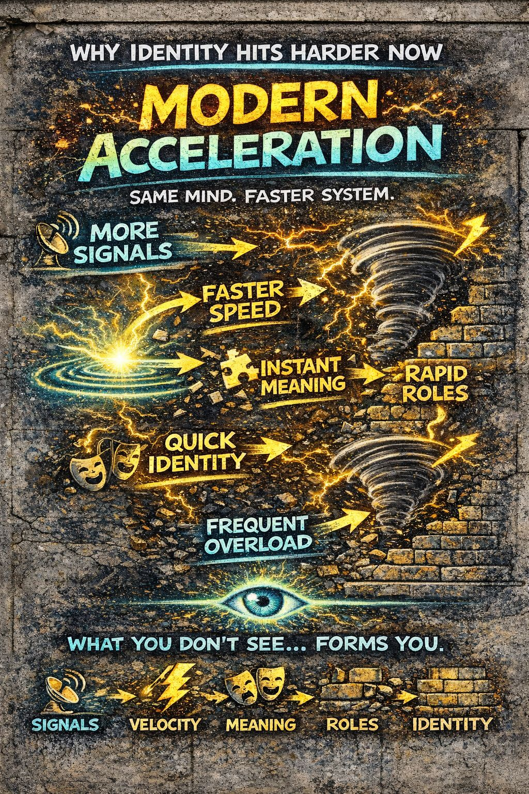

🔥 Modern Acceleration
Different velocity.”
⚡ Faster hits
🧩 Instant meaning
🎭 Rapid roles
🧱 Quick identity
🌪 Frequent overload
👁️ See it…
or get carried by it.
📍 Foundation
Everything we’ve mapped:
has always existed.
What’s changed is not the system.
⚙️ Core Definition (IPT)
Not occasional.
📡 What Changed
Then
- limited interactions
- slower communication
- smaller social fields
- delayed feedback
Now
- 📱 constant signal exposure
- ⚡ instant reactions
- 🌐 globalized audiences
- 🔁 continuous feedback loops
⚡ Velocity Is Now Default
Before:
- thoughts had time to breathe
- interpretation had space
Now:
- headlines engineered for reaction
- posts optimized for engagement
- outrage packaged for instant uptake
It arrives already accelerated.
🌐 The Always-On Generalized Other
This is one of the biggest shifts.
Before
the crowd appeared in moments
Now
the crowd is always present
Through:
- comments
- likes
- shares
- views
- imagined audiences
- potential backlash
The generalized other never leaves.
🎭 Role-Taking At Scale
You’re no longer just modeling:
- family
- friends
- local roles
Now you’re modeling:
- audiences
- followers
- critics
- subcultures
- algorithms
- multiple identity groups at once
→ identity strain
🧩 Meaning Lock Speed
Meaning used to take time.
Now:
- instant interpretation
- instant alignment
- instant opposition
and within seconds you know
“what it is” and “where you stand.”
🧱 Identity Formation Frequency
Before, identity formed slowly over years.
Now, identity forms in micro-cycles:
- per post
- per thread
- per interaction
- per audience
You have many forming simultaneously.
🌪 Failure Modes Are More Common
Because:
- 📡 more signals
- ⚡ higher velocity
- 🌐 stronger social pressure
- 🎭 more role demand
The system hits overload faster.
are no longer rare.
They’re routine.
🔁 The Loop Machine
Modern systems are designed to:
⚡ accelerate reaction
🧩 lock meaning
🎭 trigger identity
🔁 repeat
This creates:
🧠 What This Does To “I” vs “Me”
- “Me” gets reinforced constantly
- “I” gets less time to appear
Result:
⚡ live response shrinks
👁️ Why Observation Matters More Now
In A Slow World
you had natural pauses
In A Fast World
you must create them
📡 Signal Recognition As Defense
The earlier you detect:
Signal recognition becomes your first line of defense against engineered velocity.
⚠️ Key Insight
They shape identity at speed.
🔓 IPT Position
IPT does not try to:
- stop the system
- remove technology
- eliminate identity
It does this instead:
So instead of being formed unconsciously, you become aware of formation in real time.
🔥 Final Distillation
The speed is.
Different velocity.
⚡ Faster hits
🧩 Instant meaning
🎭 Rapid roles
🧱 Quick identity
🌪 Frequent overload
👁️ See it…
or get carried by it.